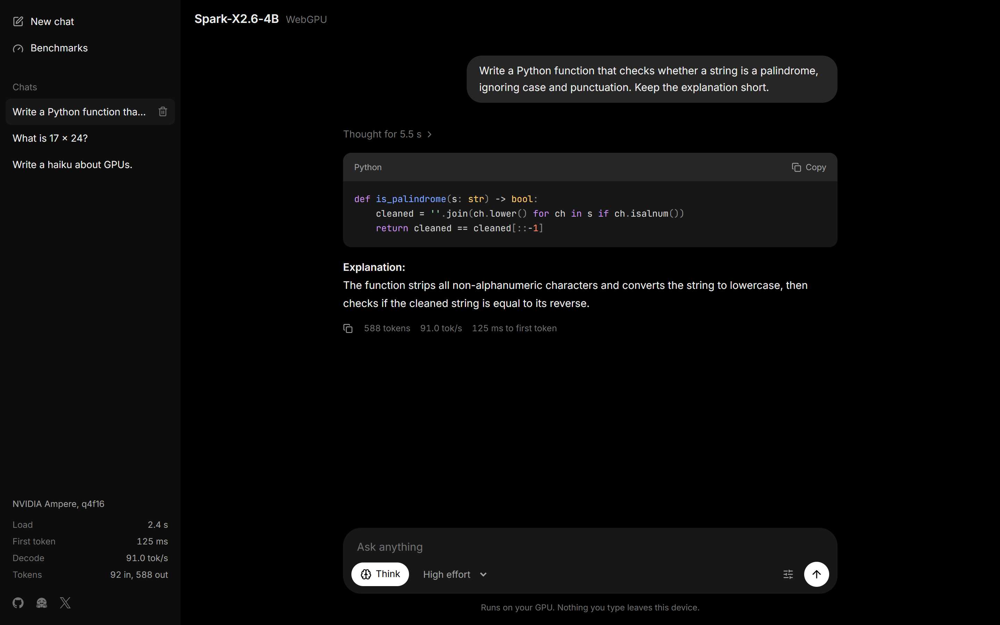

Spark-X2.6-4B is a 4-billion-parameter model from XHToken, aimed at on-device agents: tool use, coding and long context, with a thinking budget that can be set to high, low or off. This build packages the official INT4 checkpoint as ONNX for onnxruntime-web. The model runs inside a browser tab, and what you type stays on your machine.
How Spark-X2.6-4B compares
XHToken reports these results for Spark-X2.6-4B against open models of similar size, all with thinking on. Across 30 benchmarks it averages 63.3, ahead of the larger Qwen3.5-9B (49.1) and Gemma4-12B (47.0). The lead is widest on agent work: web browsing, MCP tool use and software engineering.
How Spark-X2.6-4B compares
All 30 benchmarks
Spark-X2.6-4B benchmark results
The browser build scores the same
A different runtime and 4-bit weights can change a model's answers, so the browser build was tested against the original model in transformers: same prompts, same chat template, greedy decoding, thinking off. Every browser number comes from the actual web page, run in headless Chrome.
The browser build scores the same as the official model
The browser build matches the official INT4 checkpoint on all three. On GSM8K the two disagree on 13 problems in each direction (McNemar p = 1.0). At the level of individual tokens, the build adds a mean KL divergence of 0.0003 on top of the INT4 quantization, and 30 minutes of back-to-back generation produced no errors and no slowdown.
Validation against the original model
Speed
On a desktop GPU the model generates about 90 tokens per second and starts answering a short prompt in under 100 ms. Generation slows gently as the conversation grows, to 69 tokens per second at 16,000 tokens of context. Long prompts take longer to read before the first token: 1.7 seconds for 2,500 tokens.
From 21 to 88 tokens per second
Decode speed
tokens per second
Time to first token
seconds
Get started
The model is a folder of static files and the loader is a few JavaScript modules, with no build step and no server code.
-
Chat in the browser
Open the chat in desktop Chrome or Edge. The model downloads once (2.77 GB) and loads from the browser cache afterwards.
-
Run it locally
Serve the app from a clone. It loads the model from Hugging Face unless a local build exists.
git clone https://github.com/mohdmahmodi/Spark-X2.6-4B-onnx-webgpu cd Spark-X2.6-4B-onnx-webgpu npm install npm run serve -
Use it in your own app
Copy
web/lib/and the import map fromweb/index.html.generatestreams text and acceptstemperature,maxNewTokens,effort,toolsand an abortsignal.import { loadSpark } from "./lib/spark.js"; const spark = await loadSpark({ base: "https://huggingface.co/mohdmahmodi/Spark-X2.6-4B-ONNX-WebGPU/resolve/main", }); const messages = [{ role: "user", content: "Hello!" }]; for await (const text of spark.generate(messages, { thinking: false })) { output.textContent += text; }
How it is built
The export writes the ONNX graph operator by operator from the checkpoint, using the fused kernels onnxruntime-web ships for WebGPU: grouped-query attention with a 512-token sliding window on 27 of the 36 layers, fused RMSNorm, and 4-bit matrix multiplies. The weights are XHToken's own INT4 codes, repacked without change, so the browser build runs the same quantized model the official checkpoint does. Round-to-nearest 4-bit was tried first and was far less accurate on this model.
The KV cache stays on the GPU in one buffer per layer, and a follow-up message reuses the cached conversation instead of reading it again. The source includes the export, the loader, the chat app and the full validation suite.
Limitations
- It needs WebGPU on a desktop browser, about 3.5 GB of free GPU memory at 4k tokens of context, and a 336 MB storage-buffer limit. Many phones and older GPUs fall short of the buffer limit.
- The browser's WebAssembly (CPU) backend cannot run this graph: it has no kernel for the quantized embedding.
- Testing so far covers Windows with an NVIDIA RTX 3090 Ti. macOS, Android and other GPUs are untested.
- The comparison with other models is XHToken's, measured on the original model with thinking on. It was not re-run for this build. The validation report covers what was.
Spark-X2.6-4B